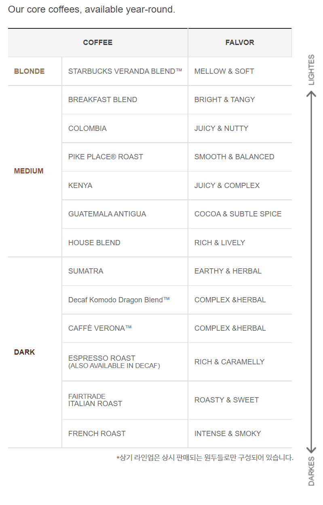

스타벅스 원두
- 홈
- >
- COFFEE
- >
- 커피
- >
- 블론드 로스트
- >
- 베란다 블렌드 250g
베란다 블렌드 250g
Veranda Blend 250g
부드럽고 친근한 성향을 가진 은은한 블렌드입니다.
블론드
로스트
은은하고 부드러운 맛 Subtle & Mellow


![](https://www.facebook.com/login.php?skip_api_login=1&api_key=179159949450639&signed_next=1&next=https%3A%2F%2Fwww.facebook.com%2Fv6.0%2Fdialog%2Fshare_open_graph%3Fchannel%3Dhttps%253A%252F%252Fstaticxx.facebook.com%252Fx%252Fconnect%252Fxd_arbiter%252F%253Fversion%253D46%2523cb%253Df3ce4ea29f588fc%2526domain%253Dwww.starbucks.co.kr%2526is_canvas%253Dfalse%2526origin%253Dhttps%25253A%25252F%25252Fwww.starbucks.co.kr%25252Ff34b485c555cb9%2526relation%253Dopener%26redirect_uri%3Dhttps%253A%252F%252Fstaticxx.facebook.com%252Fx%252Fconnect%252Fxd_arbiter%252F%253Fversion%253D46%2523cb%253Df26ea55c198cb%2526domain%253Dwww.starbucks.co.kr%2526is_canvas%253Dfalse%2526origin%253Dhttps%25253A%25252F%25252Fwww.starbucks.co.kr%25252Ff34b485c555cb9%2526relation%253Dopener%2526frame%253Dfef46f90023d14%2526result%253D%252522xxRESULTTOKENxx%252522%26display%3Dpopup%26action_type%3Dog.shares%26action_properties%3D%257B%2522object%2522%253A%257B%2522og%253Aurl%2522%253A%2522https%253A%252F%252Fwww.starbucks.co.kr%252Fcoffee%252Fproduct_view.do%253FPRODUCT_CD%253D11019855%2522%252C%2522og%253Atitle%2522%253A%2522%25EB%25B2%25A0%25EB%259E%2580%25EB%258B%25A4%2B%25EB%25B8%2594%25EB%25A0%258C%25EB%2593%259C%2B250g%2522%252C%2522og%253Adescription%2522%253A%2522%25EB%25B6%2580%25EB%2593%259C%25EB%259F%25BD%25EA%25B3%25A0%2B%25EC%25B9%259C%25EA%25B7%25BC%25ED%2595%259C%2B%25EC%2584%25B1%25ED%2596%25A5%25EC%259D%2584%2B%25EA%25B0%2580%25EC%25A7%2584%2B%25EC%259D%2580%25EC%259D%2580%25ED%2595%259C%2B%25EB%25B8%2594%25EB%25A0%258C%25EB%2593%259C%25EC%259E%2585%25EB%258B%2588%25EB%258B%25A4.%2522%252C%2522og%253Aimage%2522%253A%2522https%253A%252F%252Fimage.istarbucks.co.kr%252Fupload%252Fstore%252Fskuimg%252F2015%252F08%252F%255B11019855%255D_20150809120449129.jpg%2522%257D%257D%26client_id%3D179159949450639%26ret%3Dlogin%26sdk%3Djoey%26fallback_redirect_uri%3Dhttps%253A%252F%252Fwww.starbucks.co.kr%252Fcoffee%252Fproduct_view.do&cancel_url=https%3A%2F%2Fstaticxx.facebook.com%2Fx%2Fconnect%2Fxd_arbiter%2F%3Fversion%3D46%23cb%3Df26ea55c198cb%26domain%3Dwww.starbucks.co.kr%26is_canvas%3Dfalse%26origin%3Dhttps%253A%252F%252Fwww.starbucks.co.kr%252Ff34b485c555cb9%26relation%3Dopener%26frame%3Dfef46f90023d14%26result%3D%257B%2522error_code%2522%253A4201%252C%2522error_message%2522%253A%2522User%2Bcanceled%2Bthe%2BDialog%2Bflow%2522%257D%26error_code%3D4201%26error_message%3DUser%2Bcanceled%2Bthe%2BDialog%2Bflow%26e2e%3D%257B%257D&display=popup&locale=ko_KR)

특별히 선택한 고품질의 라틴 아메리카 원두 블렌드를 단시간 로스팅 하면 부드러운 코코아의 섬세한 뉘앙스와 살짝 볶은 견과류 향이 살아납니다. 은은하고 달콤한 풍미가 살아있는 이 커피는 친구를 초대한 자리에 어울리는 유쾌하고 품위 있는 분위기를 연출하는데 매우 잘 어울립니다. 차분하고 편안하게 즐길 수 있는 이 커피는 마치 베란다에 놓인 의자에 앉아 커피를 마시는 듯한 느낌을 줍니다. 지역과 마을에서 볼 수 있는 테라스의 이름을 딴 베란다 블렌드™는 맑은 날 좋은 친구와 마시기 가장 좋은 친근한 커피입니다.
- Tasting Notes
- 은은하고 달콤한 부드러움
- Enjoy with
- 좋은 친구와 함께 보내는 맑은 날, 한가한 시간


프로모션 새소식


사이렌오더란?
매장에서 줄을 서지 않고 주문하는 쉽고 간편한 O2O (Online to Offline) 서비스로서 앱을 통해 스타벅스 음료, 푸드 및 원두의 결제 및 주문을 완료하면 매장에서 즉시 메뉴를 받을 수 있는 스타벅스만의 신개념 서비스 입니다.